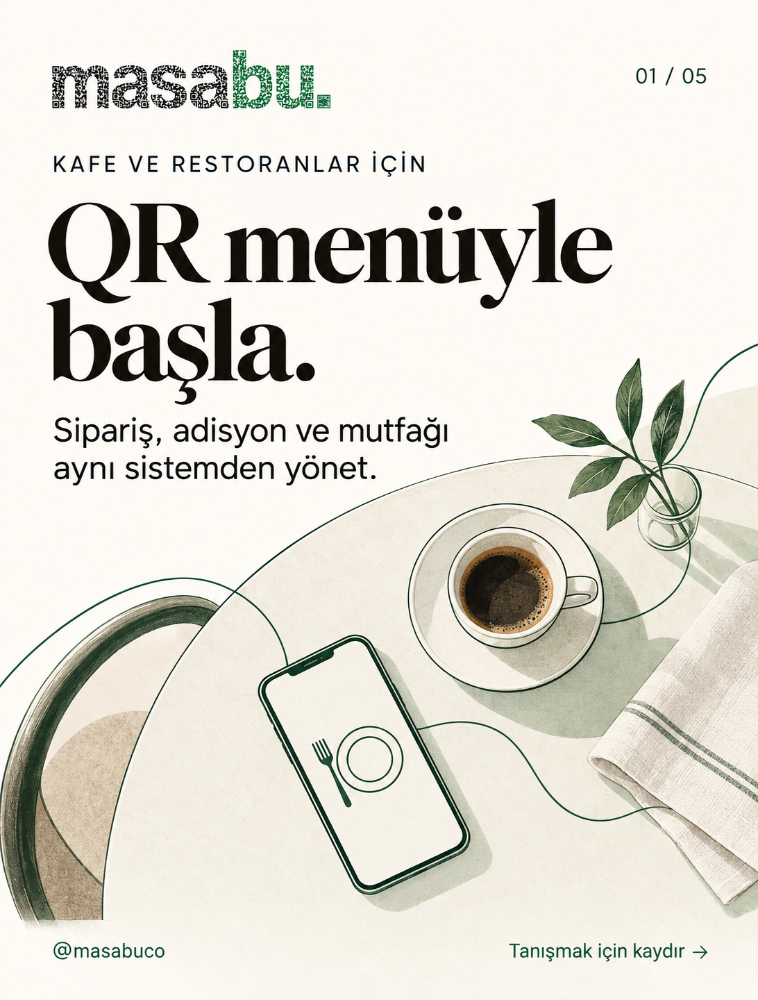
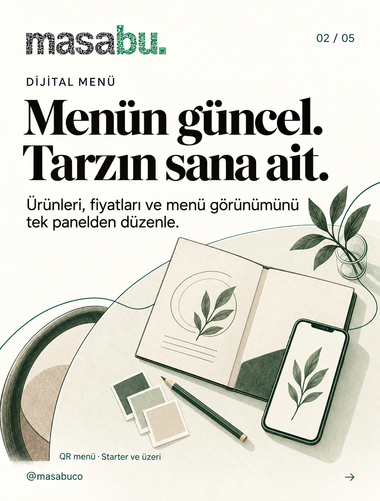
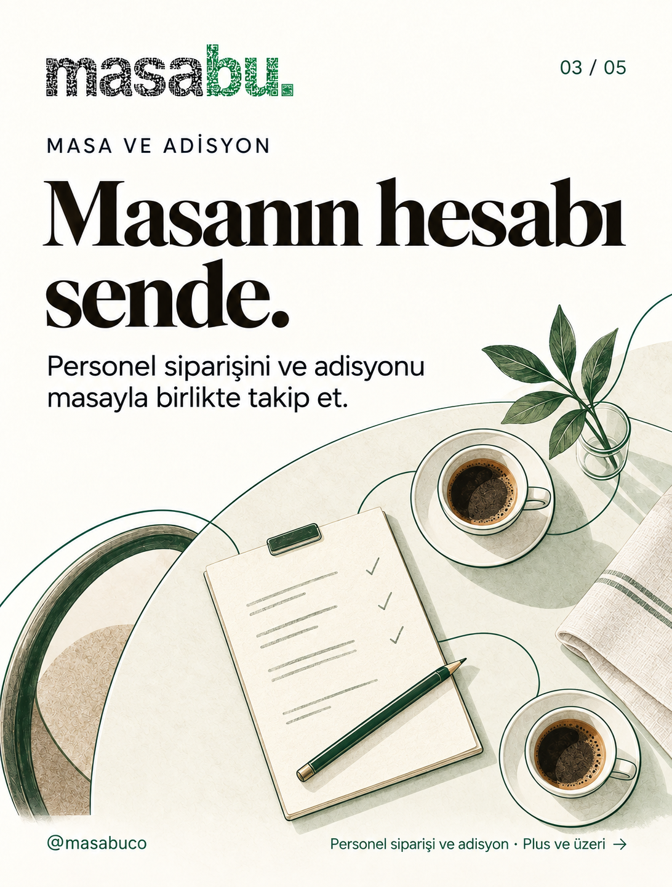
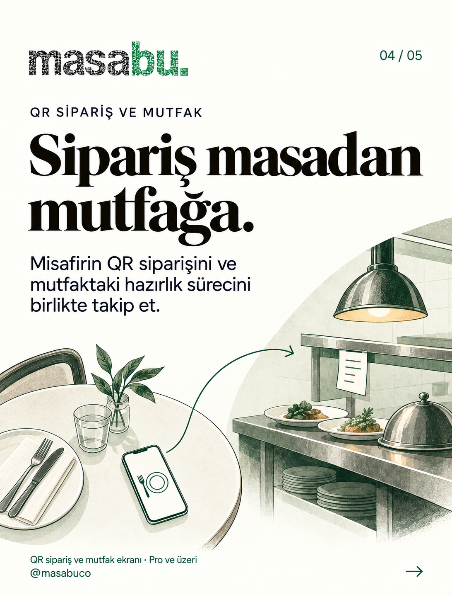
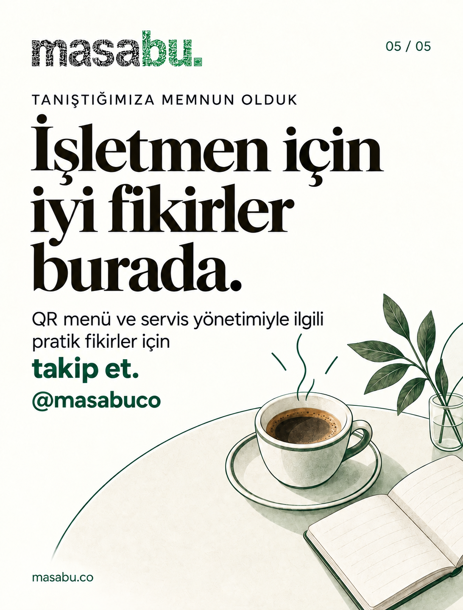

QR menüyle başla.
Beş kartlık tanışma gönderisi. Menüden masa ve mutfağa uzanan ürün anlatımı; kapanışta pratik fikirler için takip daveti.










Instagram açıklaması
Merhaba, biz Masabu. 👋
Menünüz, masalarınız ve mutfağınız aynı işin parçaları. Biz de kafe ve restoranların bu akışı aynı sistemden yönetmesine yardımcı oluyoruz.
QR menüyle başlayın; ihtiyacınıza uygun paketle personel siparişi, adisyon, QR sipariş ve mutfak ekranını ekleyin.
Bu hesapta dijital menü ve servis yönetimi için pratik fikirler ve Masabu'nun nasıl çalıştığını paylaşacağız. İşletmeniz için takipte kalın: @masabuco
Sizin işletmenizde en çok hangisi zaman alıyor: menüyü güncellemek mi, siparişleri takip etmek mi?
#Masabu #QRMenü #RestoranYönetimi
Facebook açıklaması
Merhaba, biz Masabu. 👋
Menünüz, masalarınız ve mutfağınız aynı işin parçaları. Masabu, kafe ve restoranların bu akışı aynı sistemden yönetmesine yardımcı olur.
QR menüyle başlayın; ihtiyacınıza uygun paketle personel siparişi, adisyon, QR sipariş ve mutfak ekranını ekleyin.
Dijital menü ve servis yönetimi için pratik fikirleri ve ürün akışlarını burada paylaşacağız. İşletmeniz için sayfamızı takip edin.
Sizin işletmenizde en çok hangisi zaman alıyor: menüyü güncellemek mi, siparişleri takip etmek mi?
Masabu'yu inceleyin:
https://masabu.co/?utm_source=facebook&utm_medium=organic_social&utm_campaign=launch_30d&utm_content=p01
#Masabu #QRMenü #RestoranYönetimi
Teslim notu
Görseller kavramsal çizimlerdir; gerçek ürün ekranı değildir. Yayın sırası 01 → 05. Kaynak dosyalar, paylaşım metinleri ve alternatif metinler README.md içinde; üretim promptları PROMPTS.md içinde bulunur.
Bu galeri yalnız yerel inceleme içindir. Sosyal hesaplarda paylaşım yapılmadı. Platformun yükleme önizlemesinde kırpma ayrıca kontrol edilmelidir.